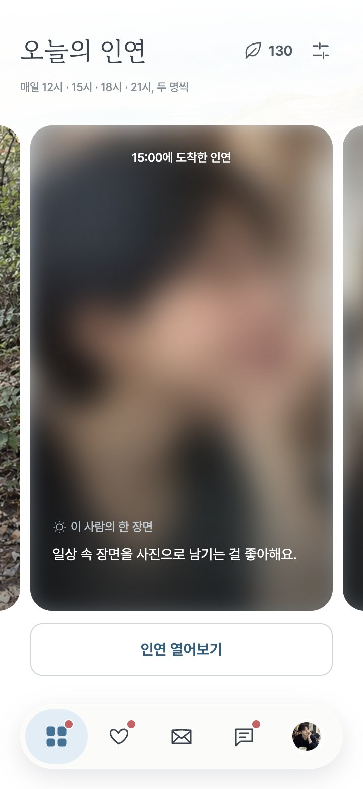
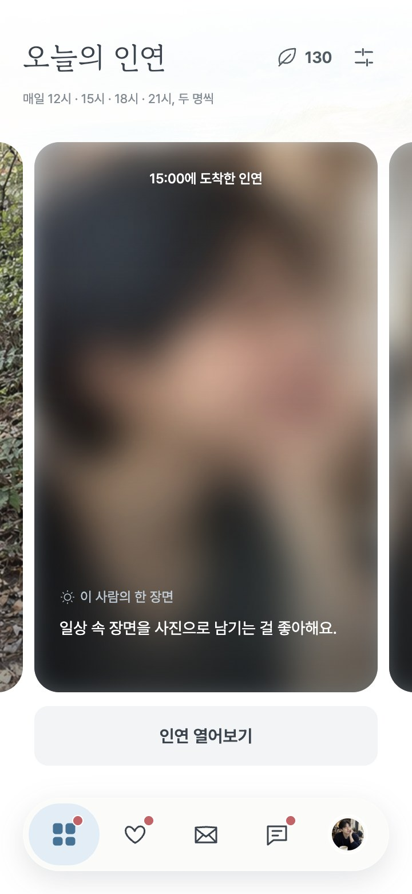
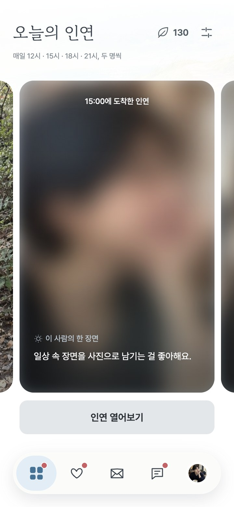
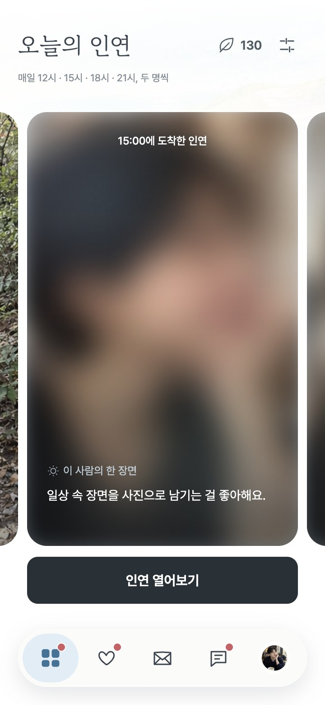
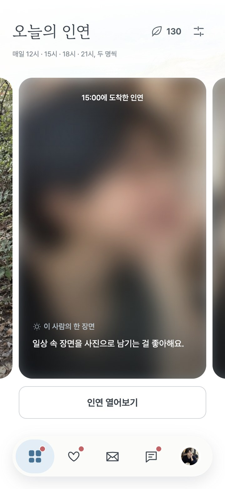

인연 홈 · 인연 열어보기 버튼 뉴트럴
- 지금: 흰 바탕 + 얇은 테두리 + 파랑(sky-700) 글자.
- N1 옅은 회색: cool-neutral-50 바탕 + 800 글자, 테두리 없음. 가장 조용해요.
- N2 회색: cool-neutral-100 바탕 + 900 글자. N1보다 버튼으로 또렷하게 읽혀요.
- N3 진한 회색: cool-neutral-900 바탕 + 흰 글자. 색 없이도 가장 눈에 띄는 주요 버튼.
- N4 흰 + 회색 테두리: 지금 모양 그대로 글자만 cool-neutral-800, 테두리 200.
시안 · 전체 화면 (공개 시간이 된 잠긴 카드 아래 버튼)

지금흰 + 파랑
N1neutral-50 + 800
N2neutral-100 + 900
N3neutral-900 + 흰 글자
N4흰 + 200 테두리 + 800